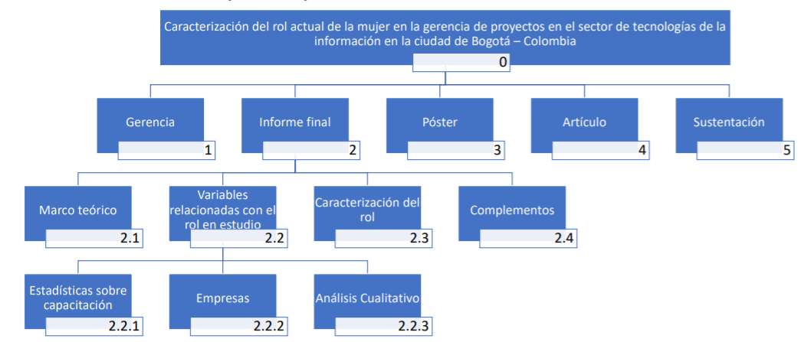

Para realizar esto se debe generar la linea base del alcance, la cual está formada por:
un documento en el cual se ponen
Herramienta util para poder llevar a cabo un proyecto. Consiste en descomponer en
el proyecto principal. Se puede hacer en forma de lista, mapa conceptual o mapa mental
Que es un paquete de trabajo?
Son los entregables de mas bajo nivel. A partir de estos se estima la duración y costo
Cuenta de control
Lugar del EDT donde se mide el progreso. Normalmente son los entregables de primer nivel
Relación de paquete de trabajo y cuenta de control?
Una cuenta de control incluye uno o varios paquetes de trabajo
Matriz de Asignación de responsabilidades. Es una matriz que resulta de cruzar el organigrama de una organización con las tareas del EDT, con el fin de saber quien responderá por las tareas (no quien las hará)
consiste en la descripción detallada del contenido de cada uno de los componentes de la EDT. Es un documento que acompaña y respalda a la EDT
Aquí van las siguientes cosas: